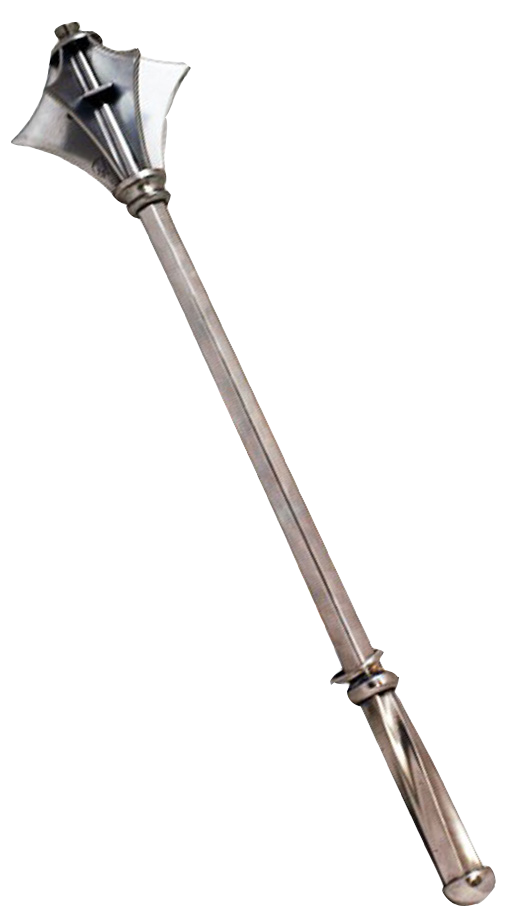

Malburg, The Cursed City
"What brought doom upon the once great city? Was it the wrath of the gods, a punishment for the opulent greed
and hedonism of sinful mortals? Was it the more insidious work of an infernal power, seeking to wreak misery and
chaos on the world? Was it the consequence of mankind's hubris, delving too deep into forbidden sorcery and
technologies? Or was it simply chance, nothing but a tiny random drop in unfathomably vast depths of the
uncaring cosmos?"
Malburg was the largest and most prosperous city in the midlands. It was rebuilt on top of a much older city after
The Coming of Chaos, and, if the stories are true, that city was built atop an even more ancient metropolis of the
legendary serpent folk. Malburg was home to the finest artisans and craftsmen, producing fine manufactured goods
from materials brought in by traders and merchants from all around the known world. The Midlands’ most renowned
inventors, artificers, alchemists, and mages studied and worked at the highly prestigious (and highly secretive)
Malburg Academy of Engineering. There they recovered much of the technology lost from before The Coming of Chaos,
and developed many new arcane devices and magics.The cities wealthy elite lived excessive, lavish lifestyles.
Beneath Malburg’s many narrow winding streets, secret societies and organized crime syndicates thrived in the
catacombs of the old city.
Malburg’s demise came in the form of a meteor, alight with an eerie green flame, which struck the heart of the city.
Smaller shards of the rock broke off shortly before impact and rained down on the whole sprawling city and
surrounding area. Buildings not destroyed by direct collision were rocked by the impact, as if struck by an
earthquake. Fires started, and some neighborhoods burned for days. In the midst of the initial chaos, twisted dark
things emerged (whether they were created by the strange dark magic of the meteor, were lurking in the depths
beneath the city, or both is unknown) to sew further chaos, and even some of the dead rose again in ghastly forms to
devour remaining survivors. Within days, Skorne warbands descended on Malburg from the surrounding hills and forests
to plunder the now defenseless city. The scant few who managed to flee the city alive were left physically twisted
and scarred, and mentally shattered.
The dark greenish-black stone which comprised much of the meteor, since dubbed “Warpstone”, exudes powerful, but
very chaotic magical energy. Strange supernatural phenomena manifest sporadically throughout the city. Mutated
former humans, warped undead, warbands of twisted Skorne, and even stranger dark things prowl the streets. Some say
even breathing the air in the city for too long is dangerous.
Despite the obvious danger, the thought of the vast wealth of the great city now lying open for the taking has
enticed many. Warpstone is now of great interest to many wizards, alchemists who are willing to offer good money to
anyone brave (or stupid) enough to venture into the ruined city to find it. The potential of uncovering the well
kept secrets of the Malburg Academy of Engineering has even drawn the attention of many rival academics. Even bands
of religious zealots intent on “purging the evil of the city” have descended on Malburg. Malburg now draws foolish
adventurers, inquisitive mages, cutthroat mercenaries, sinister cultists, and other various ne'er-do-wells like
moths to flame.
Do you have what it takes to confront these horrors and claim the vast treasure within?
Choose Your Weapon!


The City